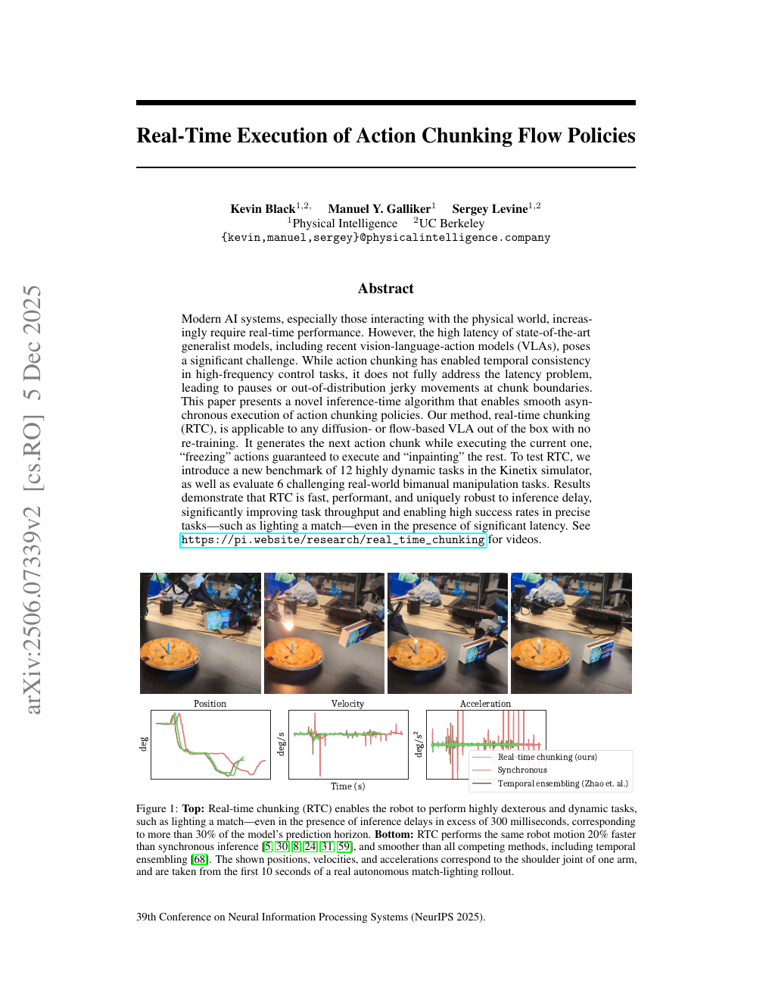
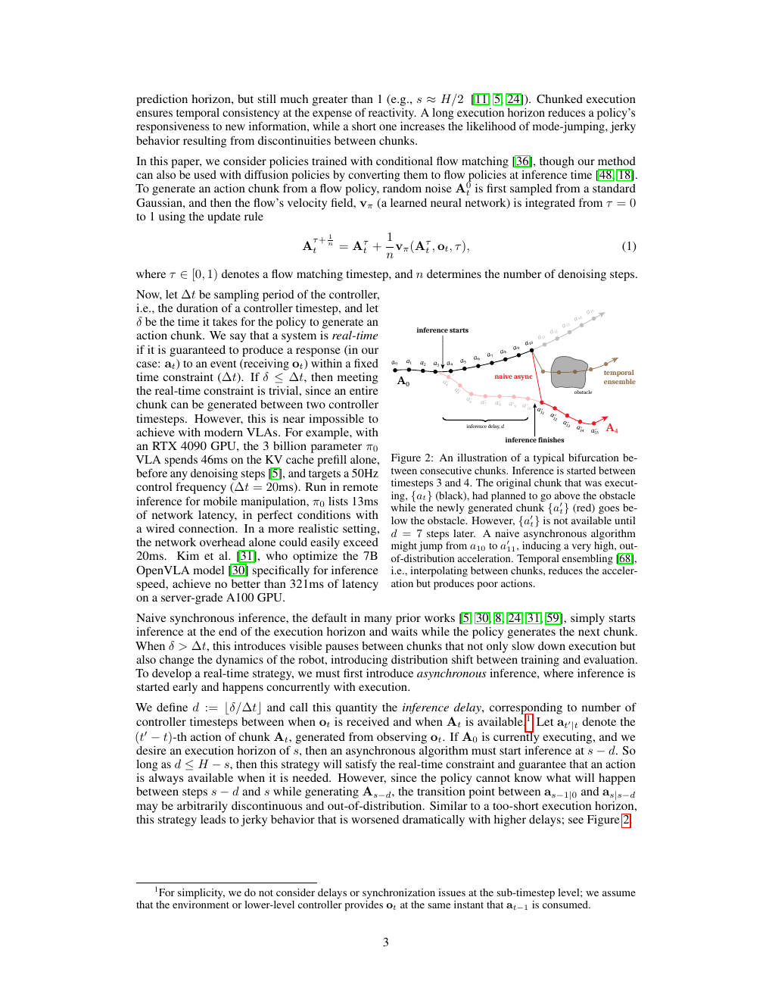
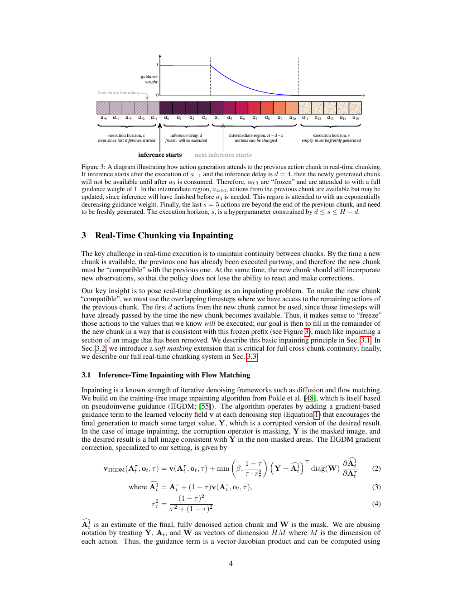
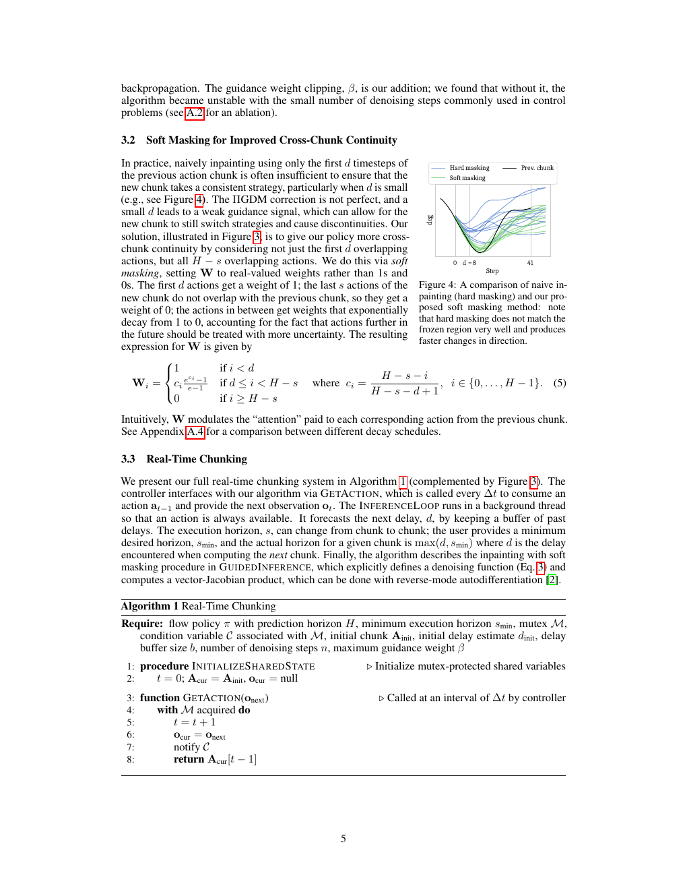
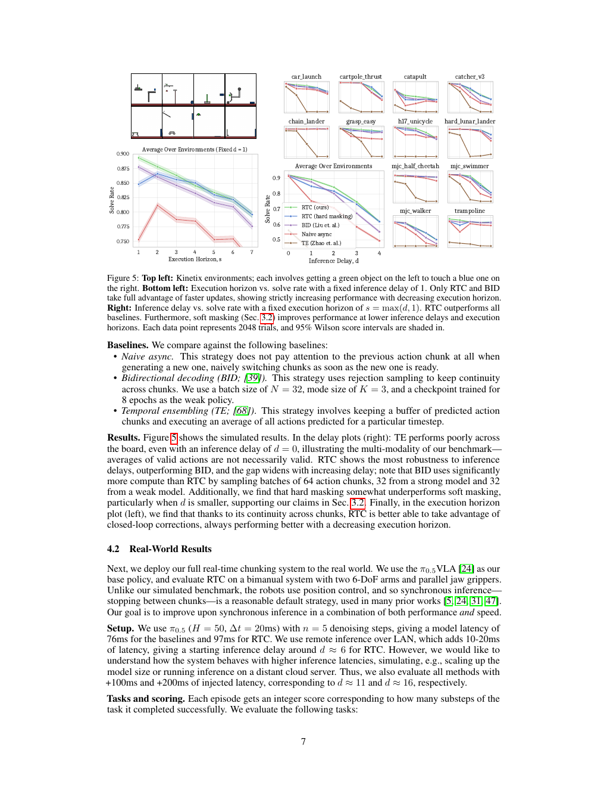
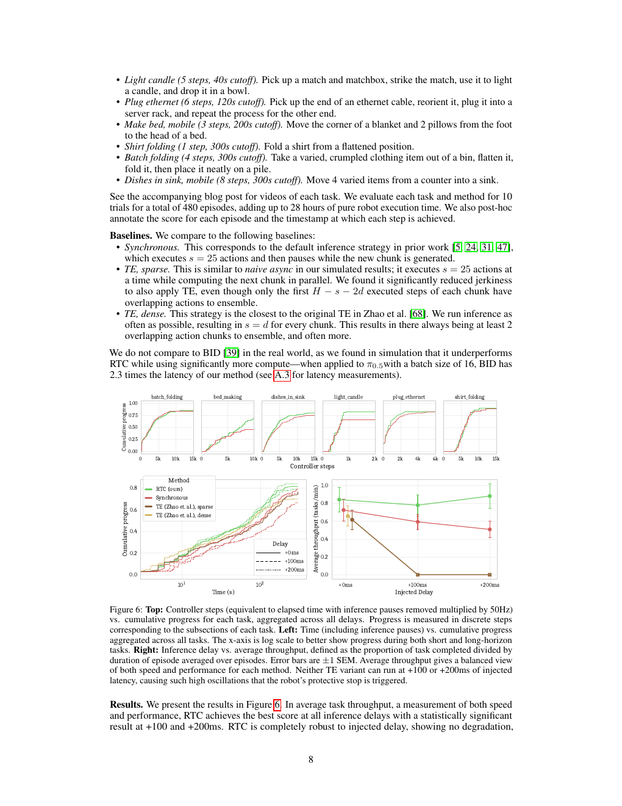
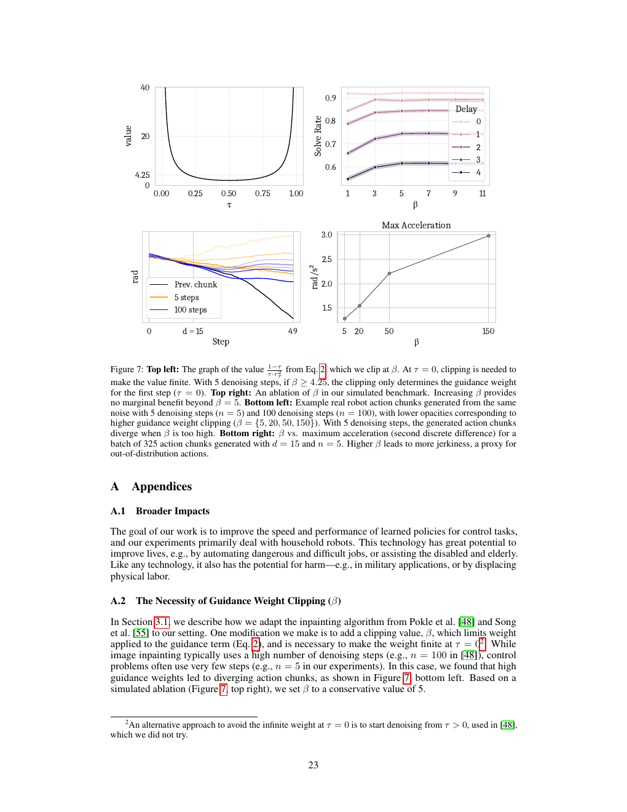

观测 → 动作块 → 并行执行
控制器每个周期消费一个动作并给出新观测；后台线程同时生成下一块。RTC 改变的是“下一块何时、以什么约束生成”，不是基础策略的训练配方。
相机、状态、任务条件进入 VLA。
→02 / 后台推理π(Aₜ | oₜ)高斯噪声经 n 次流匹配积分。
→03 / 修补冻结前缀 + 补全尾部W=1 / 指数衰减 / 0。
→04 / 执行GETACTION每 Δt 消费一个动作，新块就绪即替换。
两条循环分开：物理时间是“观测—推理—执行”；模型内部是 τ 从 0 到 1 的 n 次流积分。

依据：PDF 第 1–3 页，Fig. 1。
为什么会抖：新块到了，机器人已走到别处
预测跨度为 H，每次执行 s 步，生成耗时 δ，控制周期 Δt；离散推理延迟 d=⌊δ/Δt⌋。直接切换可能从一条策略跳到另一条策略；同步推理则在块之间停顿。
同步 · 停顿
执行完 s 步才推理；δ>Δt 时出现暂停，节奏改变。

朴素异步 / 时间集成 · 会跳
新块一就绪就切换，或平均多个块。多模态动作的平均值可能无效，a₁₀→a′₁₁ 会造成高加速度。
实时约束：异步推理在 s−d 启动，需 d≤H−s；论文系统进一步约束 d≤s≤H−d。
依据：PDF 第 2–4 页，Fig. 2 与延迟定义。
把动作块当成一幅要修补的图
新块最前 d 个动作在它就绪时已经错过，旧块剩余动作成为约束。RTC 用软掩码 W 让模型在重叠段保持策略一致，同时响应最新观测。

长度 H×M；W 不是动作，而是每个位置对旧块一致性的强度。
→ 进入 ΠGDM 引导¹ₜ 是当前去噪步对最终块的估计，不是已执行动作。
→ 与 Aprev 比较
依据：PDF 第 4–6 页，Fig. 3–4、Eq. 2–5、Algorithm 1。
公式：流积分，再加一项带权约束
数字代入是教学示意，帮助理解计算顺序；不是论文内部轨迹。
若 n=5、Aτ=0.20、vπ=0.50，则一步为 0.20+0.2×0.50=0.30。真实计算作用于 H×M 向量。
示意误差 0.10、W=1、裁剪系数 2、局部雅可比 0.5，则修正=2×0.10×0.5=0.10。β=5 防止 τ=0 附近发散。
旧块右填充到 H 的目标。
1 / 指数衰减 / 0。
引导权重上限。
依据：PDF 第 3–5 页 Eq. 1–5；β 消融见第 23 页 Fig. 7。
时间轴：模型在算，机器人在动
机制示意采用 H=16、d=4、s=5；实际调度由论文的 Algorithm 1 控制。
| 量 | 定义 | 论文设置 |
|---|---|---|
| H | 预测 horizon | 模拟 8；实机 50 |
| s | 执行 horizon | 实机最小 25，按 max(d,smin) |
| Δt | 控制采样周期 | 20ms（50Hz） |
| d | ⌊δ/Δt⌋ | +100ms→≈11；+200ms→≈16 |
依据：PDF 第 3–7 页 Fig. 3、Algorithm 1、实机 Setup。
训练与部署：RTC 只在推理时介入
模拟先训练专家，再用 1M transition 做 imitation learning；RTC 本身没有重新训练。实机使用 π₀.₅，算法通过后台线程和自动微分引导当前采样。
模拟
12 个 Kinetix 动态环境；6 个专家 seed / 环境；H=8、4 层 MLP-Mixer、32 epochs；每点 2048 rollout。
实机
双臂 6-DoF + 平行夹爪；6 任务、每方法每任务 10 次，共 480 episodes、约 28 小时执行；H=50。
监督边界：Aprev 是部署时动作，不是额外人工标签；RTC 不更新模型参数。
依据：PDF 第 6–8 页、第 24–25 页 Table 1–4。
证据：延迟越高，RTC 越稳
模拟报告 solve rate；实机报告累计进度和平均吞吐。图 1 是单次 rollout，不与统计图混读。


| 证据 | 报告值 | 解读 |
|---|---|---|
| 模型延迟 | π₀.₅ 76ms；RTC 97ms | RTC 单次更慢，但与执行并行。 |
| 实机 | +100/+200ms 仍有统计显著吞吐优势 | 吞吐合并速度与完成度。 |
| 开销 | 增加反传；仅 diffusion / flow | 作者明确的适用边界。 |
β 消融

β 超过 5 后 solve rate 无边际收益；过大 β 让 5 步去噪发散。作者采用 β=5。
依据：PDF 第 7–9、23–25 页 Fig. 5–8、Table 1–4。
边界：它没有证明所有 VLA 都能实时
论文支持
RTC 在 12 个动态模拟任务和 6 个双臂实机任务中提升异步执行的连续性、延迟鲁棒性与吞吐；无需训练时改动。
未覆盖
增加计算开销；只适用于 diffusion / flow；未在实机 locomotion 评估；π₀.₅ 训练数据和运行时代码未公开。
依据：PDF 第 10 页 Discussion；第 18 页开放说明。